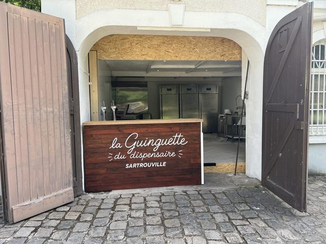

Vous cherchez une guinguette près de Paris où aller ce week-end, sans voiture et sans galère de trajet ? La Guinguette du Dispensaire est à Sartrouville, sur le RER A, installée dans un parc public de 2,75 hectares.
Une guinguette dans un parc, à 20 minutes de La Défense
La guinguette est installée dans le Parc du Dispensaire, en centre-ville de Sartrouville, dans les Yvelines. C'est un parc public arboré de 2,75 hectares, dans la boucle de Seine, à deux pas du fleuve. Tout se passe dehors : une terrasse ombragée, des tables sous les arbres, un bar, et de la place pour poser sa journée.
Ce qui rend l'adresse pratique, c'est la ligne. Sartrouville est sur le RER A. Depuis Paris ou depuis La Défense, on arrive sans changement, et on repart pareil.
Combien de temps depuis Paris ?
- La Défense : environ 20 minutes de RER.
- Châtelet-Les Halles : environ 30 minutes.
- Auber ou Charles-de-Gaulle-Étoile : à peu près le même temps.
- Nanterre, Rueil-Malmaison, Houilles : quelques minutes seulement.
Ce sont des ordres de grandeur, hors perturbations. Un seul réflexe à avoir : sur le quai, vérifiez la destination. Sartrouville est desservie par les trains qui filent vers Poissy et vers Cergy. L'écran du quai vous le dit en deux secondes.
De la gare de Sartrouville au parc : dix minutes à pied
En sortant de la gare, comptez une dizaine de minutes de marche jusqu'au parc, au 1 avenue Maurice Berteaux. C'est plat, c'est en pleine ville, et ça se fait aussi bien en tongs qu'en chaussures de bureau.
Si vous préférez ne pas marcher, le bus 73 s'arrête au Dispensaire, juste au pied du parc. Et pour ceux qui viennent en voiture, un parking gratuit est disponible sur place. Le détail complet est dans notre article Comment venir : RER A, bus et parking.

L'entrée du parc est libre et gratuite
Il n'y a pas de porte à pousser, pas de contrôle, pas de droit d'entrée. Le Parc du Dispensaire est un espace public : on y entre comme on entre dans n'importe quel jardin de ville. Seules les consommations au bar sont payantes. Vous pouvez très bien venir passer l'après-midi, laisser les enfants jouer, et prendre une citronnade au moment où l'envie arrive.
Venir sans voiture, ça change quoi ?
Ça change l'apéro, très concrètement. Personne ne compte ses verres en pensant au retour, personne ne se dévoue pour conduire. On reste, on discute, on repart quand la conversation est finie.
Ça change aussi les retrouvailles à plusieurs. Se donner rendez-vous à huit ou à dix devient simple quand chacun arrive par sa propre branche du RER : ceux de Paris, ceux de La Défense, ceux de Houilles ou de Maisons-Laffitte convergent au même endroit sans qu'on ait à organiser de covoiturage.
Une guinguette en Île-de-France, mais à taille humaine
On ne va pas vous vendre un lieu spectaculaire. C'est une guinguette de quartier, avec ce que ça implique de bon : des tables en bois, de la musique certains soirs, des enfants qui courent, des chiens sous les tables, et des gens qui restent plus longtemps que prévu.
Il y a des jeux de plein air à disposition — mölkky, palet breton, pétanque — et l'aire de jeux du parc juste à côté. Le menu enfant est à 9 €. Côté animations, la saison est rythmée par des concerts live, des blind tests et des DJ sets : tout est listé dans l'agenda, et c'est en accès libre.
Ce qu'on boit, ce qu'on partage
Des bières pression — blonde, IPA, et les versions Picon pour ceux qui savent — des vins au verre sélectionnés par Pépites de Vin, un prosecco bio, des cocktails (spritz, mojito, moscow mule) et de vrais softs, dont une citronnade maison.
À manger : des planches charcuterie et fromage pour deux ou quatre, des frites maison, des aiguillettes de poulet, du melon en été. Et trois formules qui vont vite : Planche & Vins à 25 €, Grande Tablée à 45 €, Frite & Pinte à 12 €. Le menu complet est ici.
Horaires : une adresse de saison
La guinguette ouvre de juin à octobre. Le reste de l'année, le parc reste ouvert, mais le bar est fermé.
- Lundi : fermé
- Mardi au vendredi : 16h – 22h
- Samedi et dimanche : 11h – 22h
Tout se passant dehors, l'ouverture dépend de la météo. Avant de prendre le RER, un coup d'œil à notre Instagram vous évitera un aller-retour pour rien.
Questions fréquentes
La guinguette est-elle accessible en RER A ?
Oui. Descendez à la gare de Sartrouville, puis dix minutes à pied, ou bus 73 arrêt Dispensaire.
Combien de temps depuis Paris ?
Environ 30 minutes depuis Châtelet-Les Halles, environ 20 minutes depuis La Défense, sans changement.
Faut-il payer pour entrer ?
Non, le parc est public et l'accès est gratuit. Seules les consommations sont payantes.
Peut-on venir sans réserver ?
Oui, mais c'est plus sûr de réserver le week-end, les soirs de concert et quand vous venez en groupe.
Envie de venir ?
Réservez votre table ou jetez un œil à la carte. On vous attend au Parc du Dispensaire, à Sartrouville.
Réserver une table Voir la carte